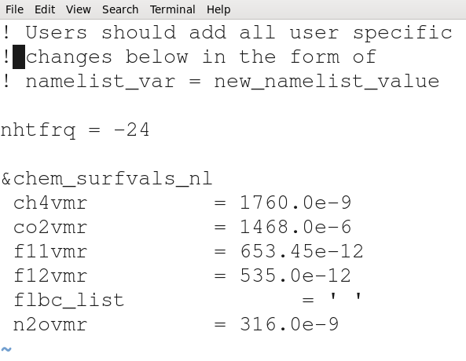

Introduce model experiments
You will work in pairs for this practical but you will still need to each analyze the model outputs "separately".
First choose your teammate: you will have to work together to set-up and run your experiment so make sure one of you has access to hexagon.
Experiments
List of experiments to choose:
Run the experiment for 14 months starting on 1st of January until 1st of March the following year. For this use the same restart file you used for the short experiment.
- EXPNAME=CO2:Doubling/ Tripling of CO2 (change CO2 value to 2x367 ppm=734 ppm or 3x367 ppm = 1101 ppm > change the name list)
- EXPNAME=sea_ice: Melt of Arctic sea ice (set sea ice fraction to zero North of 40N > change the input data set)
- EXPNAME=SST: El Nino effect (add +5 K to tropical Central and East Pacific SST from 5S to 5N, 180W to 85W > change the input data set)
- EXPNAME=rocky: Removal of Rocky Mountains (set surface Geopotential to 0 within ?N lat and ? Wlon > change the input data set)
Setup your new experiment
Create a new case for your "long" experiment
Use an appropriate name for your new experiment depending on your experiment (doubling CO2, Sea ice, etc.). Suggested EXPNAME are given above.
Create a new case always involve executing create_newcase.
On Hexagon:
cd $HOME/cesm/cesm1_2_2/scripts
# Adjust EXPNAME depending on your experiment (CO2, sea_ice, SST, rocky)
export EXPNAME=CO2
#
# Simulation 2: Long simulation
#
./create_newcase -case ~/cesm_case/f2000.T31T31.$EXPNAME -res T31_T31 -compset F_2000_CAM5 -mach hexagon
Now you should have a new directory in $HOME/cesm_case/f2000.T31T31.$EXPNAME corresponding to our new case (On Hexagon):
# Make sure EXPNAME is correctly defined!
cd ~/cesm_case/f2000.T31T31.$EXPNAME
As before we start from Hans' experiment:
On Hexagon:
./xmlchange RUN_TYPE=hybrid
./xmlchange RUN_REFCASE=f2000.T31T31.control
./xmlchange RUN_REFDATE=0009-01-01
Make sure you set the duration of your experiment properly. Here we wish to run 14 months from Hans' restart experiment:
./xmlchange -file env_run.xml -id STOP_N -val 14
./xmlchange -file env_run.xml -id STOP_OPTION -val nmonths
Now we are ready to set-up our model configuration and build the cesm executable.
On Hexagon:
./cesm_setup
# Make sure EXPNAME is set properly!
./f2000.T31T31.$EXPNAME.build
The default history file from CAM is a monthly average.
We can change the output frequency with the namelist variable
nhtfrq
- If nhtfrq=0, the file will be a monthly average
- If nhtfrq>0, frequency is input as number of timesteps.
- If nhtfrq<0, frequency is input as number of hours.
For instance to change the history file from monthly average to daily
average, we set the namelist variable nhtfrq = -24. We also need to do the following changes (to copy restart files in your running directory, etc.):
On Hexagon:
cat >> user_nl_cam << EOF
nhtfrq = -24
EOF
cat >> user_nl_cice << EOF
grid_file = '/work/users/$USER/inputdata/share/domains/domain.ocn.48x96_gx3v7_100114.nc'
kmt_file = '/work/users/$USER/inputdata/share/domains/domain.ocn.48x96_gx3v7_100114.nc'
EOF
# Make sure EXPNAME is set properly!
scp login3.norstore.uio.no:/projects/NS1000K/GEF4530/outputs/runs/f2000.T31T31.control/run/f2000.T31T31.control.*.0009-01-01-00000.nc /work/users/$USER/f2000.T31T31.$EXPNAME/run/.
scp login3.norstore.uio.no:/projects/NS1000K/GEF4530/outputs/runs/f2000.T31T31.control/run/rpointer.* /work/users/$USER/f2000.T31T31.$EXPNAME/run/.
Now depending on your experiment case, you would have either to change the namelist or to change the input dataset.
Doubling CO2: how to update my namelist?
Namelists can be changed before configuring and building CESM but it can also be done before running your long simulation case. Then, you cannot use xmlchange and update the xml files, you need to directly change the namelist files.
To be able to double CO2, you first need to check the current CO2 value. Got to your case directory:
# Make sure EXPNAME is correctly defined! (here CO2)
cd ~/cesm_case/f2000.T31T31.$EXPNAME
cd CaseDocs
ls
atm_in docn_ocn_in ice_modelio.nml rof_modelio.nml
atm_modelio.nml docn.streams.txt.prescribed lnd_in seq_maps.rc
chem_mech.doc drv_flds_in lnd_modelio.nml wav_modelio.nml
chem_mech.in drv_in ocn_modelio.nml
cpl_modelio.nml glc_modelio.nml README
docn_in ice_in rof_in
In CaseDocs, you can find all your namelists for your experiment. To check the current CO2 value, you can edit atm_in (do not modify it!) and search for co2vmr:
grep -i co2vmr atm_in
Change from co2vmr (year 200): 367.0e-6 to 734.0e-6 (3xCO2) or larger if you like in your user_nl_cam file (NOT in atm_in). Edit user_nl_cam and update its value. user_nl_cam is your case directory:
cd ~/cesm_case/f2000.T31T31.$EXPNAME
ls user_nl_cam

Then you can apply your changes and check again atm_in:
./preview_namelists
cd CaseDocs
# check and make sure your new value is set for cm2vmr
grep co2vmr atm_in
Now you are ready to submit your simulation.
How to change the input dataset?
For all the other experiments, you would have to change the input dataset.
Adjust parameters for your long batch submission
Before submitting your experiment (f2000.T31T31.$EXPNAME.submit), you need to adjust wall clock time and adjust CPU resources.